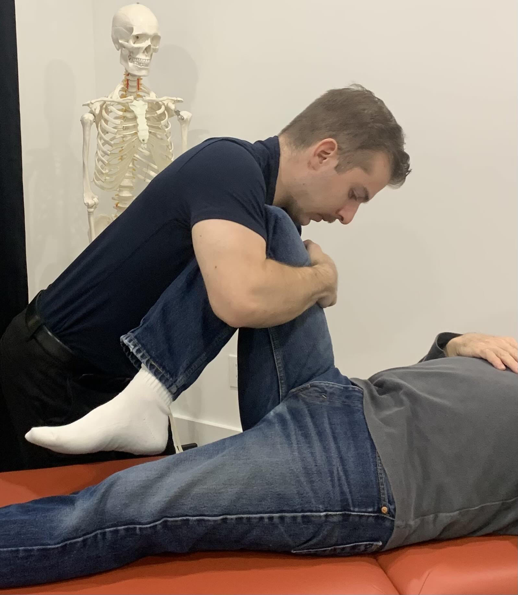

Appointments, Pricing and Free Consultation

The initial appointment is $80 including tax, the follow-up appointment is $75 including tax, and a free 20-minute consultation is available for people with questions.
- Initial Appointment: $80.00 including tax
- Follow-Up Appointment: $75.00 including tax
- 20-Minute Consultation: free
What Happens at the Initial Appointment?
The initial appointment introduces osteopathy, reviews your health history and clinic expectations, and concludes with osteopathic assessment and treatment.
What Is a Follow-Up Appointment?
A follow-up appointment is osteopathic treatment based on the ongoing presentation, symptomatic progression and assessment. The follow-up appointment is $75.00 including tax.
What Is the Free 20-Minute Consultation?
The free consultation is for people who are unsure what osteopathy is, whether it is right for them, what to expect or what questions they should ask before booking. The consultation can be done by phone if necessary.
What to Expect Before You Arrive
- Parking: Free parking is available around the building.
- Clothing: Please wear appropriate, loose-fitting clothing as I will need to move your body around with as much ease as possible.
- Arriving on time: Please do your best to be early and on time. If you show up late to an appointment you will be treated for the remainder of your time slot and no extra time will be allotted. If you are consistently late or missing your appointments your standing in the clinic may be reassessed.